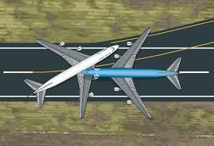
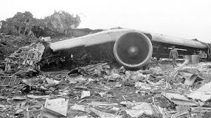
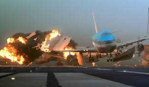
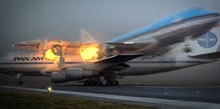

El desastre aéreo de Tenerife (también conocido como accidente de Los Rodeos) hace referencia a una colisión entre dos aviones Boeing 747, que se produjo el 27 de marzo de 1977 en el aeropuerto de Los Rodeos (actual Tenerife-Norte) en el municipio de San Cristóbal de La Laguna, al norte de la isla española de Tenerife. Un total de quinientas ochenta y tres personas perdieron la vida.
Para Pan Am fue el peor siniestro aéreo que involucró una aeronave estadounidense, mucho más que el vuelo 191 de American Airlines ocurrido dos años después. Para la KLM fue el siniestro más mortífero de una aeronave neerlandesa superando el siniestro del vuelo 138 de Martinair acaecido tres años antes. Asimismo, es el peor accidente aéreo a nivel mundial en la historia de la aviación.
Los aviones accidentados fueron el vuelo 4805, un vuelo chárter de la línea aérea neerlandesa KLM, que volaba desde el aeropuerto de Schiphol en Ámsterdam (Países Bajos), en dirección al aeropuerto de Gran Canaria (España), y el vuelo 1736, vuelo regular de Pan Am, que volaba desde el aeropuerto Internacional John F. Kennedy en Nueva York, procedente del aeropuerto Internacional de Los Ángeles (Estados Unidos), hacia el aeropuerto de Gran Canaria.
Un aviso de bomba en el aeropuerto de Gran Canaria, llevado a cabo por independentistas del Movimiento por la Autodeterminación e Independencia del Archipiélago Canario (MPAIAC), provocó que muchos vuelos fueran desviados a Los Rodeos, incluidos los dos aviones involucrados en el accidente. El aeropuerto rápidamente se congestionó de aviones estacionados que bloqueaban la única calle de rodaje y forzaban a los aviones que salían a rodar por la pista. Parches de niebla espesa se desplazaban por el aeródromo, de modo que no había visibilidad entre las aeronaves y la torre de control.
   La colisión ocurrió cuando el avión de KLM inició su carrera de despegue mientras el avión de Pan Am, envuelto en la niebla, todavía estaba en la pista y a punto de salir a la calle de rodaje. Al percatarse de su presencia en la pista de despegue, el avión de KLM intentó elevarse para sobrevolar al avión de Pan Am y casi lo consiguió, pero acabó embistiéndolo. Del choque resultante pereció todo el pasaje a bordo del KLM 4805 y la gran mayoría del Pan Am 1736, del que solo sobrevivirían sesenta y un personas que iban sentadas en la parte delantera de la aeronave.
La investigación realizada posteriormente por las autoridades españolas concluyó que la causa principal del accidente fue la decisión del capitán de KLM de despegar, creyendo, erróneamente, que se había emitido una autorización de despegue del control de tráfico aéreo (ATC). Los investigadores neerlandeses pusieron mayor énfasis en el malentendido mutuo en las comunicaciones de radio entre el equipo de KLM y el ATC, pero en última instancia KLM admitió que su equipo fue responsable del accidente y la aerolínea finalmente acordó compensar económicamente a los familiares de todas las víctimas.
El accidente tuvo una repercusión duradera en la industria aeronáutica, en la que se destacó sobre todo la importancia vital del uso de la fraseología estandarizada en las comunicaciones de radio. Los procedimientos de cabina también se revisaron, lo que contribuyó al establecimiento de la gestión de los recursos de la tripulación como parte fundamental de la capacitación de los pilotos de las aerolíneas.
| #inicio# | Nombre del Accidente | Fecha | Lugar | Muertes |
|---|---|---|---|---|
| 1 | Vuelo 191 de American Airlines | 25 de mayo de 1979 | Chicago, EE.UU. | 273 |
| 2 | Vuelo 123 de Japan Airlines | 12 de agosto de 1985 | Monte Takamagahara, Japón | 520 |
| 3 | Vuelo 655 de Iran Air | 3 de julio de 1988 | Estrecho de Ormuz | 290 |
| 4 | Desastre de Charkhi Dadri | 12 de noviembre de 1996 | Charkhi Dadri, India | 349 |
| 5 | Vuelo 981 de Turkish Airlines | 3 de marzo de 1974 | Ermenonville, Francia | 346 |
| 6 | Accidente del Monte Erebus | 28 de noviembre de 1979 | Monte Erebus, Antártida | 257 |
| 7 | Vuelo 007 de Korean Air Lines | 1 de septiembre de 1983 | Isla Sakhalin | 269 |
| 8 | Vuelo 587 de American Airlines | 12 de noviembre de 2001 | Queens, Nueva York | 265 |
| 9 | Vuelo 163 de Saudia | 19 de agosto de 1980 | Riad, Arabia Saudita | 301 |
| 10 | Vuelo 447 de Air France | 1 de junio de 2009 | Océano Atlántico | 228 |